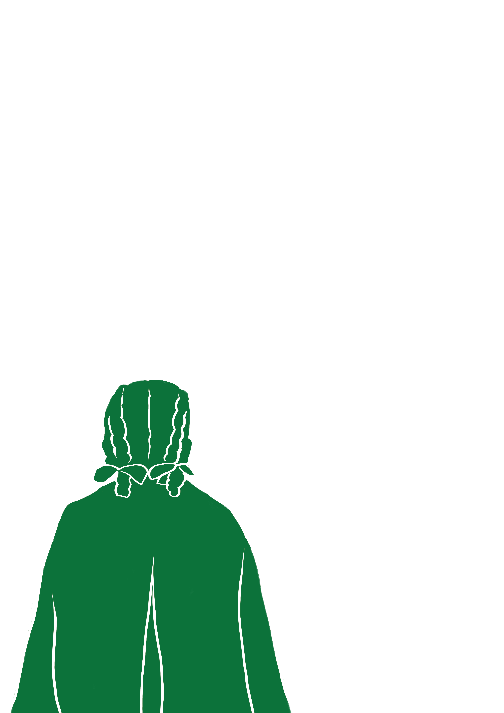
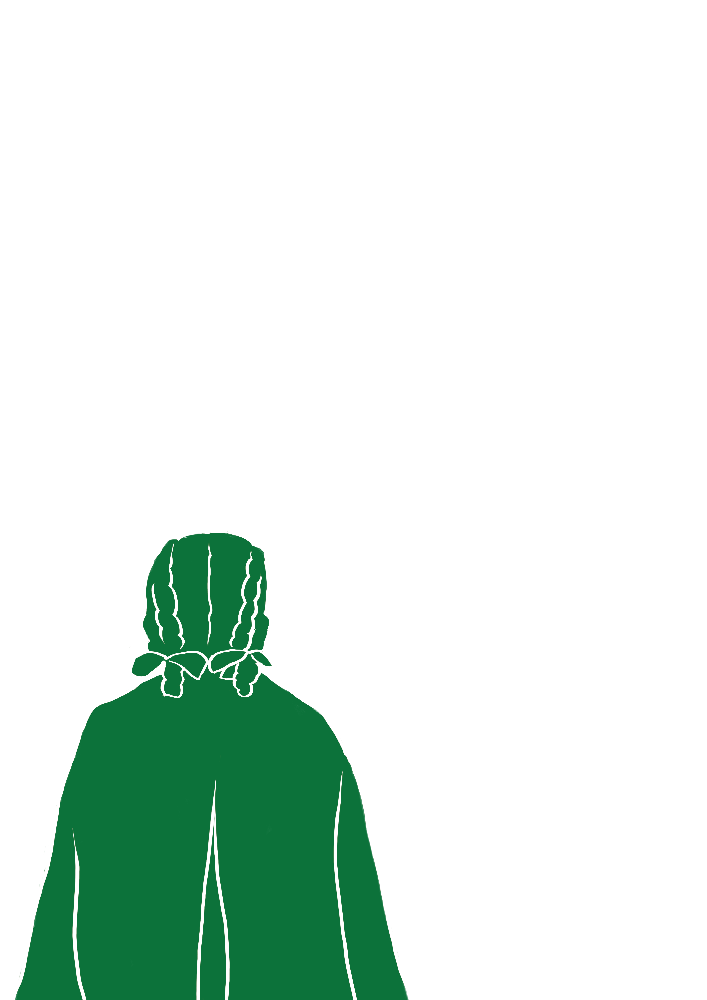
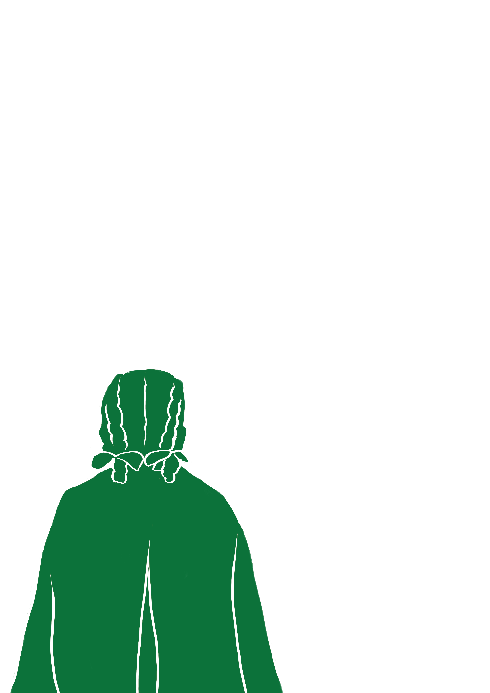

Часто роми залишались непомітними для представників окупаційної влади.
Далеко не всі вели кочовий спосіб життя і різко виділялися на фоні іншого населення.
І в моменти, коли вирішувались питання гибелі чи порятунку,
найбільшу небезпеку часто уособлювали не окупанти, а ті,
кого роми знали можливо все своє життя – сусіди, вчителі, двірники,
чи просто знайомі, які могли донести і викрити їх етнічне походження.
Поруч із численними розповідями про зради односельчан, свідки
згадують також про випадки, коли представники допоміжної поліції, які були
«з місцевих», рятували ромів на порозі смерті.
Тут ми звертаємось до історії Лєни, - а точніше -
Олени Павлівни Кантемирової (Шекерової).
Народилась вона в ромській родині 15 березня 1935р. Батько був родом з м.
Каховки, мати – з Херсону. Все життя батько присвятив кузнечій справі –
спочатку працював у колгоспах, потім – на заводах. Мати займалась
вихованням дітей – окрім Лєни в родині було ще четверо хлопчиків
та дівчинка. Ось як описує ці події в одному з інтерв’ю Олена Кантемирова:
Аудіо текст
Кантемирова (Шекерова) Олена Павлівна
Как только немцы вошли, они сразу – «цигойнер» и поставили не то,
чтобы сказать вам, что поставили охрану – нет. Но уже было над нами
и над евреями, мгновенно они собрали… Нас они не собрали,
а сказали никуда не выходить – будет идти регистрация.
Тем детям, у которых отец был еврей, а мать русская,
или наоборот – на груди поцепили голубые звезды.
По-моему, шесть углов было у этой звезды.
У нас, например, в Каховке я видела на груди эти звезды.
А таких евреев уже…
Никуда… Собирали… На перерегистрацию и вели моих друзей и меня с ними.
Меня забрали от ихнего до… со двора. Когда пришли их забирать,
мы были во дворе, играли. Вы понимаете, это ж не то шо…
Ну от как с соседом.
И тем более у нас было… Не было ни заборов, ничего.
Мы жили как одна семья. И меня взяли с ними вместе.
Евреев повели на расстрел. И меня с ними вместе.
Ну я прошла, еще до угла не дошла – полицейский…
Ну они ж выросли с моими братьями вместе,
и он меня выхватывает с этой [толпы]… Там пыль,
то есть мы ж шли все вместе и я с детями, со своей
подругой Лилей за руку держалась. Он меня выхватывает и говорит:
«ты куда идешь, Лена?» А я говорю: «С Лилей».
Он говорит: «Щас же иди домой!» И берет,
набрасывает на меня какой-то жакет…
И крикнул мне: «Быстро уходи отсюда».
И я убежала, убежала во двор.
Конечно, родители не выходили.
Я уже сама забежала во двор и там мгновенно я зашла в комнату и
больше мы не выходили. Соседи сказали, что не выходите никуда.

Кантемирова (Шекерова) Олена Павлівна
Часто роми залишались непомітними для представників окупаційної
влади.
Далеко не всі вели кочовий спосіб життя і різко виділялися на фоні іншого населення.
І в моменти, коли вирішувались питання гибелі чи порятунку,
найбільшу небезпеку часто уособлювали не окупанти, а ті,
кого роми знали можливо все своє життя – сусіди, вчителі, двірники,
чи просто знайомі, які могли донести і викрити їх етнічне походження.
Поруч із численними розповідями про зради односельчан, свідки
згадують також про випадки, коли представники допоміжної поліції, які були
«з місцевих», рятували ромів на порозі смерті.
Тут ми звертаємось до історії Лєни, - а точніше -
Олени Павлівни Кантемирової (Шекерової).
Народилась вона в ромській родині 15 березня 1935р. Батько був родом з м.
Каховки, мати – з Херсону. Все життя батько присвятив кузнечій справі –
спочатку працював у колгоспах, потім – на заводах. Мати займалась
вихованням дітей – окрім Лєни в родині було ще четверо хлопчиків
та дівчинка. Ось як описує ці події в одному з інтерв’ю Олена Кантемирова:
19 вересня 1941-го війська Вермахту увійшли до Києва.
За кілька днів вибухнули будівлі у Київській цитаделі та на Хрещатику.
Вибухи стали зручним приводом для окупантів провести показову каральну акцію.
У підривах звинуватили євреїв. Насправді ж організаторами цих вибухів
були радянські диверсанти. Перші арешти і розстріли відбулися вже 27 вересня.
28-го в Києві з’явилися оголошення, в яких наказували всім євреям міста
зібратися зранку наступного дня на розі вулиць Дегтярівської та Мельникова.
«Дорога смерті», якою пройшли десятки тисяч євреїв 29 вересня 1941 року,
пролягала від Лук’янівської площі по вул. Мельникова до перших воріт Єврейського
кладовища, далі – на вул. Кагатну (нині – сім’ї Хохлових), потім по вул.
Табірній (нині – Дорогожицькій). Біля входу до Братського кладовища у
євреїв відбирали гроші, коштовності, документи, а також наказували
залишати речі й верхній одяг. У кінці Братського (Воїнського)
кладовища (нині – територія телевежі) люди повертали у прохід
між огорожею кладовища та краєм яру. Розстріл відбувався на майже
півкілометровому відтинку яру, який починався біля пам’ятника 1976 р.,
а закінчувався за теперішньою станцією метро «Дорогожичі».
Людей змушували роздягатися догола та спускатися до яру,
де клали долілиць, шар за шаром, а вздовж рядів ішли німецькі
поліцейські й вбивали їх пострілами в потилицю [4].
Того дня, 29 вересня, німці встигли до 18.00
розстріляти близько 22 тисяч людей. Інших приречених загнали на ніч у
порожні гаражі на вул. Табірній (сучасна Дорогожицька) і вбили наступного дня.
Потім німецькі сапери підірвали схили, щоб засипати тіла, і змусили
військовополонених вирівняти дно яру. За два дні (29-30 вересня)
загинула 33 771 особа [4].
Р.А. Кузнецов писав у книзі "Бабин Яр": "[Цигани] підлягали такому ж
негайному знищенню, як і євреї... Циган везли в Бабин Яр цілими таборами..."
[5] Народна пам'ять зберігає перекази про 5 ромських кочових таборів,
які ніби-то стали одними з перших жертв київського урочища.
У зоні воєнного управління відомо 29 випадків масових страт Р. 1941–43,
більшість з яких припадає на 1942.
Оскільки саме із 1942 історики відслідковують масові винищення осілих ромів [3].
Дуже часто роми залишались непомітними для представників
окупаційної влади. Адже далеко не всі вели кочовий спосіб життя і різко виділялися
на фоні іншого населення. На період Другої світової війни вже достатньо великий
відсоток ромів давно були осілими і працювали ремісниками, ковалями, цирульниками,
вчителями, інженерами, різноробочими, були колгоспниками чи просто мали свої
домашні господарства. І в моменти, коли вирішувались питання гибелі чи порятунку,
найбільшу небезпеку часто уособлювали не окупанти, а ті, кого роми знали можливо
все своє життя – сусіди, вчителі, двірники, чи просто знайомі, які могли
донести і викрити їх етнічне походження.
На теренах окупованої України питання знищення або порятунку ромів найчастіше
вирішувалося безпосередньо на місцях. В умовах нестачі німецьких кадрів й
особистого складу на перший план виходили представники місцевого населення.
Часто саме вони відігравали важливу роль у виконанні окупаційних наказів,
у тому числі розпоряджень щодо місцевого населення. Позиція вчорашніх сусідів,
залучених на другорядних і допоміжних ролях в апарат місцевої адміністрації
і військово-політичного управління, могла вплинути й на проведення владою
заходів щодо «циганського питання». В цьому контексті стосунки ромів з
місцевим населенням укладаються в тріаду «кати – жертви – спостерігачі».
Н. Бессонов наголошує, що «всупереч стереотипам, цигани в середині XX ст.
зовсім не були вигнанцями, оточеними стіною недовіри і забобонів. Те, що вдалося
врятуватися половині потенційних жертв, пояснюється низкою психологічних чинників».
Найчастіше подальшу долю ромів визначали їхні стосунки із сусідами.
Як бачимо, тема рятівників актуальна не лише для
єврейського народу. Щоправда, в історіографії Голокосту та публічному
дискурсі вона нині є добре розробленою. Натомість маємо констатувати,
що епізоди порятунку ромів, як і тема ромського геноциду загалом,
досі є маловивченими і ще тільки чекають на своїх дослідників.
Цей процес буде ускладнюватися тим, що інформанти під час запису
інтерв’ю часто не могли згадати точні імена своїх спасителів.
Їхня пам'ять моїми очима / Авт.-упоряд. Т. Сторожко,
Н. Томенко. - Кременчук: Молодіжна агенція з адвокації
ромської культури «АРКА», 2018. - 30 с.
Тяглий М.І. РОМИ [Електронний ресурс]. – Режим доступу:
http://www.history.org.ua/?termin=romy
Яременко В. Хто, коли і як загинув у Бабиному Яру.
Історична довідка до 75-х роковин злочину [Електронний
ресурс]. – Режим доступу:
https://old.uinp.gov.ua/news/khto-koli-i-yak-zaginuv-u
-babinomu-yaru-istorichna-dovidka-do-75-kh-rokovin-zlochinu
5. Кузнецов А. Бабий Яр. — 4-е изд. — Киев: Саммит-Книга,
2008. — 368 с. — 25 тыс. экз. — ISBN 978-966-7889-24-1.


 
